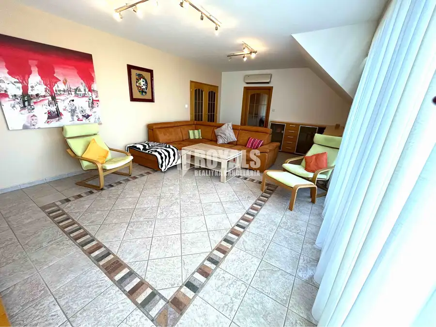
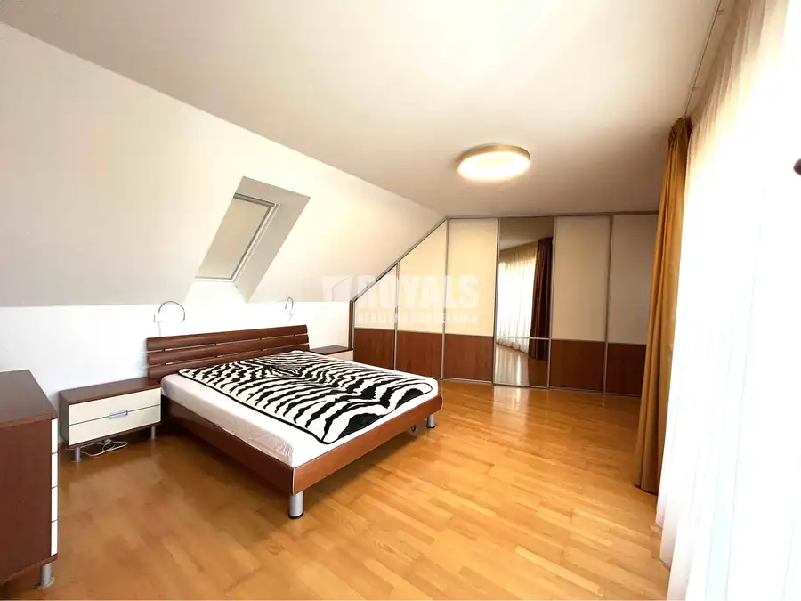
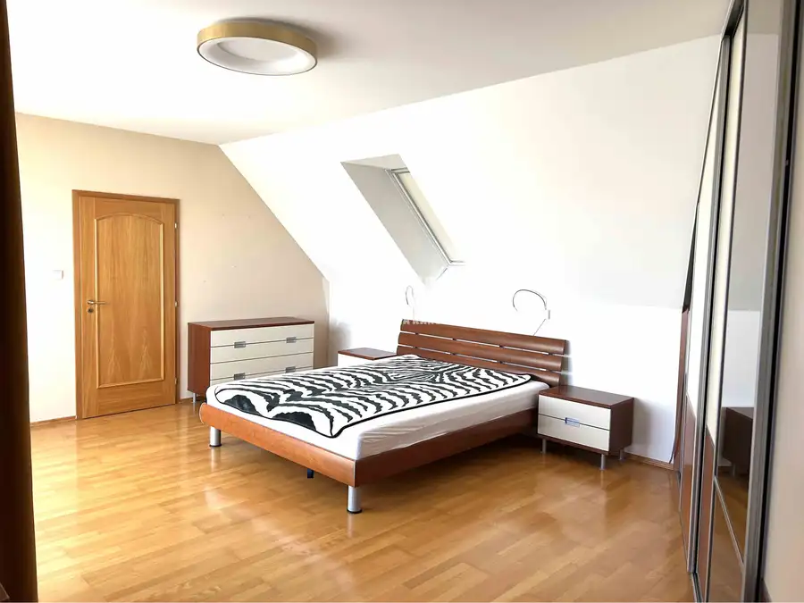

Na prenájom kompletne zariadený 4i byt, balkón, terasa, garáž pre 2 autá + parking, Bratislava IV
Záhorská Bystrica, Bratislava




- Dispozícia4-izbový
- Plocha158.05 m²
- Poschodie1. z 1
- StavKompletná rekonštrukcia
- VlastníctvoOsobné
O nehnuteľnosti
V lokalite Strmý vŕšok v Záhorskej Bystrici ponúkame na prenájom kompletne zariadený, klimatizovaný 4i mezonetový byt s terasou a balkónom s úžasným výhľadom až na Schloss Hof.Byt je situovaný na 1.NP bez výťahu v tichej zabývanej lokalite.Dispozičné riešenie: vstupná chodba, samostatná, kompletne vybavená kuchyňa so špajzou, obývačka s výstupom na terasu s posedením, 2 samostatné nepriechodné izby jedna s pochôdznym šatníkom, kúpeľňa s vaňou a sprchovacím kútom, samostatná toaleta.Na poschodí sa nachádza spálňa so zabudovaným šatníkom a výstupom na balkón, kúpeľňa s vaňou, sprchovacím kútom a toaletou.Vybavenie: plynový sporák, elektrická rúra, chladnička s mrazničkou, umývačka riadu, práčka, sušička, klimatizácia.Kúrenie a ohrev TÚV zabezpečuje vlastný plynový kotol. Kúrenie je podlahové v kúpeľni je aj rebríkový radiátor.Zárukou príjemnej atmosféry v byte je nielen klimatizácia, ale aj exteriérové elektrické žalúzie.K dispozícii je garáž pre 2 vozidlá, ktorá poskytuje dostatok úložného priestoru aj pre bicykle, pneumatiky,... a parkovacie miesto pre ďalšie auto.V Záhorskej Bystrici je kompletná občianska vybavenosť.Výhodou je blízkosť prírody — Malé Karpaty, lesy a množstvo cyklotrás. Miesta ako Kačín, Plácek, Pajštún – populárne na výlety a relax.Dobré dopravné napojenie na diaľnicu D2 a obchvat a dostupnosť MHD (linka 37).Obchody a služby: Tesco, Billa, Kaufland, cukrárne, kaviarne, reštaurácie, zdravotné stredisko, lekárne, základná škola a materské škôlky, jasle, posilňovňa. 7 min. autom Bory Mall a nemocnica BORY.Byt je k dispozicii od 1. septembra 2026.Nájomné: 1.500 EUR/mesiac vrátane energií, parkovania pre 3 vozidlá a internetuKaucia: 2.000 EURBez provízie pre RK!!!Kontakt: Janka KováčováMobil: 0905 821 777e-mail: kovacova@royals.sk In Bratislava IV - Záhorská Bystrica, Strmé vŕšky we are offering for rent a 3-bedroom apartment with an terrace, balcony, 2 parking spaces in a garage and a parking lot.The apartment if fully equipped an it has a stunning view of Schloss Hof and Schneeberg.Disposition:1st floor: entrance hall, fully equipped kitchen with separate storage-room, living room entering the terrace, 2 separate bedrooms one with walk-in closet, bathroom with shower and bathtub, separate toilet.2nd floor: master bedroom entering a balcony, bathroom with shower, bathtub and toilet.Equipment: air condition, electric exterior shades, washing machine, trumle dryer, dish washer, electric oven, gas cooking range, fridge and freezer.The apartment has his own boiler and gas heating (floor heating in the whole apartment).The apartment is situated on the 1st floor in an quite environment surrounded by family houses.There is also a agrage available, were 2 cars fit in and you will still have enough place for bicycles, tires,....All amenities nearby.Great advantage is the close proximity to nature — Malé Karpaty, plenty of cycling roads, Kačín, Plácek, Pajštún – popular for family trips and relax.Good transport connections to the D2 motorway and the bypass, as well as access to public transport (bus line 37). Shops and services: Tesco, Billa, Kaufland, pastry shops, cafés, restaurants, a health centre, pharmacies, a primary school and kindergartens and a gym. Bory Mall and the BORY Hospital are a 7-minute drive away.The apartment will be available from the 1st of september 2026. Price: 1.500 EUR/month energies, internet, parking for 3 cars included Safety deposit: 2.000 EURKontakt: Janka KováčováMobile: +421 (0) 905 821 777e-mail: kovacova@royals.sk
Parametre
- Cena vrátane energií
- Nie
- Druh
- 4 izbový byt
- Dátum zverejnenia
- 08. 08. 2026
- Energetický certifikát budovy
- nie je
- Orientácia
- Juhozápadná
- Plocha balkónu v m2
- 4 m²
- Plocha terasy v m2
- 10 m²
- Podlažie
- 1
- Počet balkónov
- 1
- Počet izieb / miestností
- 4
- Počet nadzemných podlaží
- 1
- Stav nehnuteľnosti
- Kompletná rekonštrukcia
- Telekomunikácie
- Internet
- Terás
- 1
- Typ
- Prenájom
- Typ konštrukcie
- Tehlová
- Umiestnenie
- Vstavba podkrovia
- Vlastníctvo
- Osobné
- Vybavenie
- Balkón, Terasa, Garáž, Špajza, Sklad
- Vykurovanie
- Podlahové, Lokálne
- Zariadenie
- Zariadené kompletne
- Úžitková plocha
- 158.05 m²
Kde to je


Mohlo by Vás zaujímať
 BytNové
1 500 €4i byt, kompletne zariadený na prenájom, balkón, terasa, garáž pre 2 autá + parking, Bratislava IV
Záhorská Bystrica, Bratislava
4-izbový158.05 m²1. podlažie
BytNové
1 500 €4i byt, kompletne zariadený na prenájom, balkón, terasa, garáž pre 2 autá + parking, Bratislava IV
Záhorská Bystrica, Bratislava
4-izbový158.05 m²1. podlažie
 DomNové
799 000 €5i Vilka s privátnym mólom so vstupom do jazera, garážou, novostavba, Penati Golf Resort, Senica
Šajdíkove Humence
166 m²
DomNové
799 000 €5i Vilka s privátnym mólom so vstupom do jazera, garážou, novostavba, Penati Golf Resort, Senica
Šajdíkove Humence
166 m²
 Komerčné priestoryNové
Cena na vyžádáníVariabilný, zateplený, vykurovaný skladový priestor so sociálnym zázemím, Koniarovce
Koniarovce
140 m²
Komerčné priestoryNové
Cena na vyžádáníVariabilný, zateplený, vykurovaný skladový priestor so sociálnym zázemím, Koniarovce
Koniarovce
140 m²